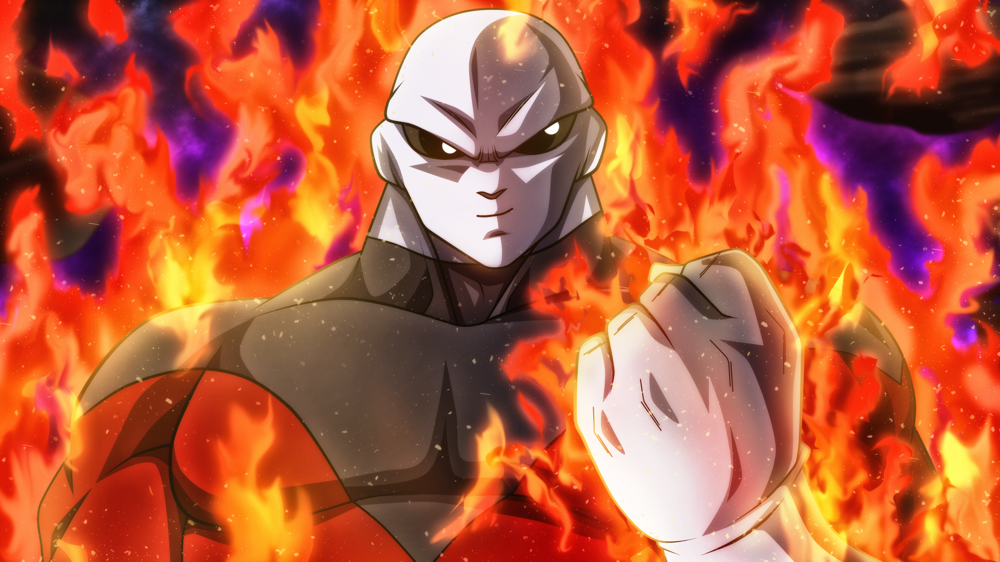

Jiren vs Broly, who wins?
What would happen if these two absolute monsters were to fight each other?
Dragon Ball Super introduced the strongest fighter Goku and Vegeta ever faced; Jiren. And it also reintroduced the strongest Saiyan Goku and Vegeta ever face; Broly. But just what would happen if these two absolute monsters were to fight each other? Would Pride Trooper Jiren get the best of Super Saiyan Broly, or is Broly stronger than Jiren?
No, Broly is not stronger than Jiren. Jiren is far stronger than Broly, even when Broly is in his Wrathful state. Jiren has more power than God of Destruction and could deal with Goku while using Ultra Instinct.
Broly is one of the strongest naturally gifted Saiyans there is, who made his debut Canon appearance in Dragon Ball Super: Broly. He even created his own Legendary version of Super Saiyan named Wrathful which is stronger than Goku and Vegetas Super Saiyan Blue. So Broly is definitely stronger than Goku and Vegeta individually but was massively outpowered by Super Saiyan Blue Gogeta. If Gogeta had used Super Saiyan Blue Kaio-Ken, than it would have been an even more decisive victory. If Goku could use Ultra Instinct, then Goku would have been able to defeat Broly easily. Beerus, the God of Destruction, saw Brolys power and wasnt threatened by it.
Jiren has enough power to make Gods of Destruction think twice. One-on-one he'd easily be able to beat any of the fighters in the tournament of power. Even after been ganged up and attacked by Goku, Vegeta, Golden Frieza and Android 17, he still wasn't fully defeated and only lost the Tournament of Power because of the rules, not because he lost the fight. Ultra Instinct Goku was able to give Jiren some trouble, but ultimately Jiren powered up to another level and handled the most powerful version of Goku ever to exist. So Jiren is extremely strong and would probably give Beerus God of Destruction a good fight. Anyone that can stop a Spirit Bomb with a blink of their eyes is one strong dude!
Just because Jiren is stronger than Broly right now doesn't mean that it will always be the case. Broly has had relatively little training, and now he has found some friends, Cheelai and Lemo, he might be able to increase his power. Imagine if Broly were to learn Kaio-Ken! Seeing Broly Wrathful Kaio-Ken x 20 against Jiren would be a very interesting fight indeed.
Source: dragonball.guru
Back to news